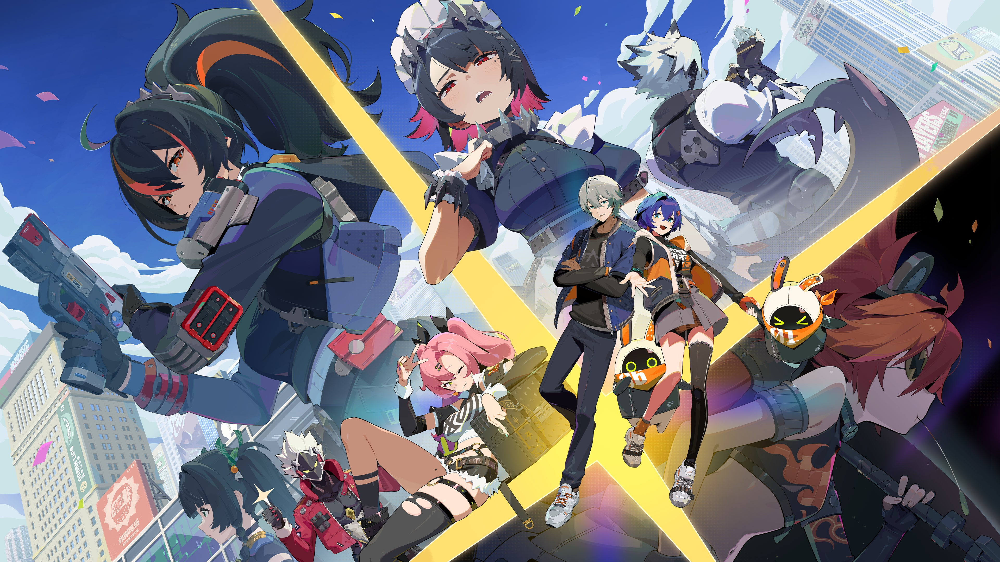
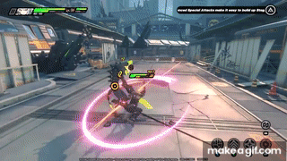
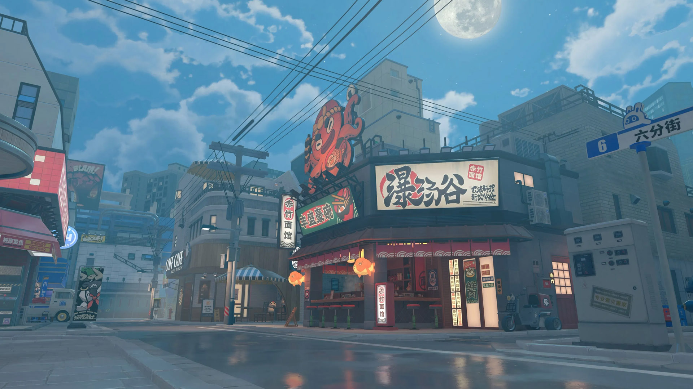

Sejarah

Zenless Zone Zero pertama kali diumumkan pada tahun 2021, mencuri perhatian banyak gamer dengan
desain grafis yang memukau dan alur cerita yang menarik. Game ini merupakan proyek terbaru dari
HoYoverse, yang sebelumnya sukses dengan Genshin Impact dan Honkai Impact.
Dalam perjalanan pengembangannya, game ini telah mengalami beberapa fase beta, mendapatkan
masukan dari pemain untuk meningkatkan pengalaman bermain. Zenless Zone Zero menawarkan dunia
yang penuh misteri, mengajak pemain menjelajahi berbagai lokasi dan karakter unik.
Gameplay dan Mekanik

Zenless Zone Zero menggabungkan elemen pertarungan real-time dengan sistem gacha yang
memungkinkan pemain mengumpulkan berbagai karakter. Setiap karakter memiliki kemampuan dan latar
belakang yang berbeda, memberikan variasi dalam strategi pertarungan.
Pemain juga akan dihadapkan pada misi beragam dan dungeon yang menantang, memerlukan
keterampilan dan taktik untuk menyelesaikannya. Dengan berbagai mode permainan, Zenless Zone
Zero menawarkan pengalaman yang dinamis dan menyenangkan.
Keunikan
Dunia New Eridu dipenuhi dengan karakter-karakter unik yang memiliki latar belakang menarik dan
hubungan yang dalam. Pemain dapat memilih karakter sesuai dengan gaya bermain masing-masing,
menciptakan tim yang seimbang untuk menghadapi tantangan.
Karakter Utama

Setiap karakter dalam Zenless Zone Zero memiliki kisah dan motivasi yang mendalam, membuat
pemain lebih terhubung dengan mereka. Pengembangan karakter ini menjadi salah satu daya
tarik utama dalam game ini.
Lingkungan Desain

Desain visual New Eridu yang futuristik dan artistik menciptakan atmosfer yang menarik.
Pemain akan menikmati berbagai lokasi yang kaya detail dan penuh misteri, menjadikan
eksplorasi sangat menyenangkan.